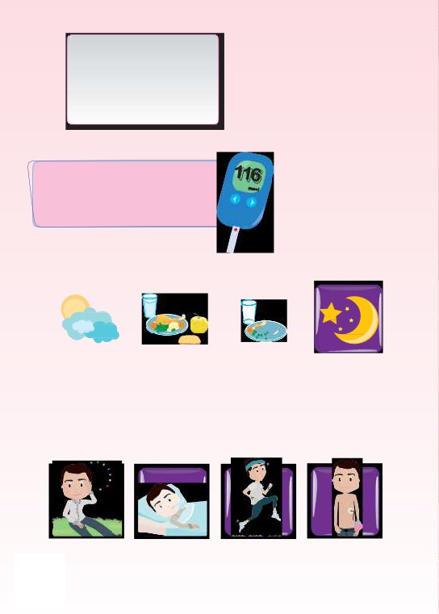
L’AUTOSURVEILLANCE
GLYCÉMIQUE
Mesurer la glycémie
Au moins 4 fois par jour
(quand on est sousinsuline)
Quand?
8
Matin au réveil
Avant les repas
Après les repas Avant le coucher
(1h30 à 2h après
le début du repas)
ou en cas de :
Malaise
Infections ou
Activitéphysique Utilisation de pompe
hypoglycémie
traumatismes
importante
à insuline
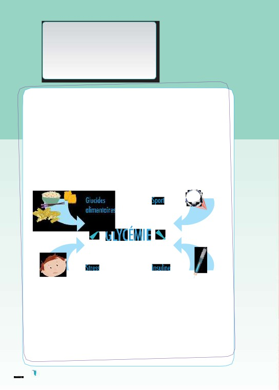
L’HYPOGLYCÉMIE
L’hypoglycémie correspond au moment où le taux de sucre
dans le sang (glycémie) est trop bas.
Repérez les causes possibles de l’hypoglycémie :
•un repas sauté ou pauvre englucides,
•un exercice physique trop intense ouimprévu,
•une dose d’insuline trop élevée,
• un surdosage en insulino-sécréteur (traitement
oral qui stimule le pancréas),
•une consommationd’alcool.
10
Figure :les quatre facteursqui font varierlaglycémie -extraitde “Lesdiabètes en perspective,
comprendre pour traiter” par le Pr GérardReach
Sachez repérerles symptômes del’hypoglycémie
Sensationdefaim,nausées,sueurs,tremblements,comportementanormal,
impressiondefonctionnerauralenti,fatigue,troublesdelavue,palpitations,
picotements au niveau de labouche͙
Si vous avez ces signes, contrôlez votre glycémie et notez également cela
dans votre carnetd’autosurveillance.
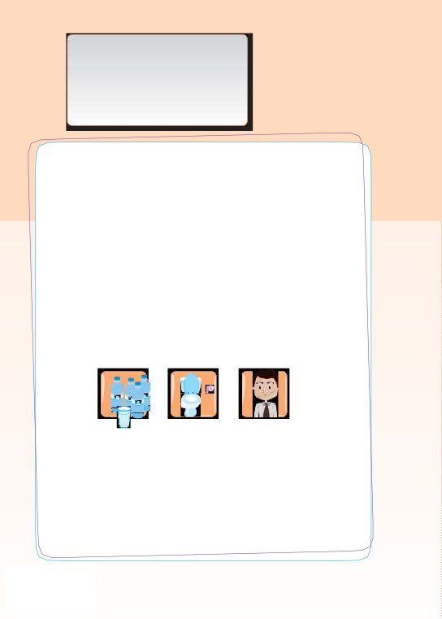
L’HYPERGLYCÉME
L’hyperglycémieest définie par un taux de sucre dans le sang (glycémie)
trop élevé.
Les causes possibles de l’hyperglycémie
•Une dose d’insuline ou de comprimés hypoglycémiants
réduite ou un oubli de la dose d’insuline.
•Un repas trop riche englucides.
•Une maladie.
•Une activité ou exercice physique moins important que
d’habitude.
•Un dysfonctionnement de votrepompe.
2
Les symptômes de l’hyperglycémie
•En cas de fortehyperglycémie,il peut y avoir une soif intense
et une fréquente envie d’uriner aggravant la soif. En cas
d’hyperglycémie modérée,jusqu’ă 2 g/l,il peut n’y avoir aucun
signe.
•Sensation de bouche sèche.
•Mal de tête.
•Odeur fruitée de l’haleine (acétone).
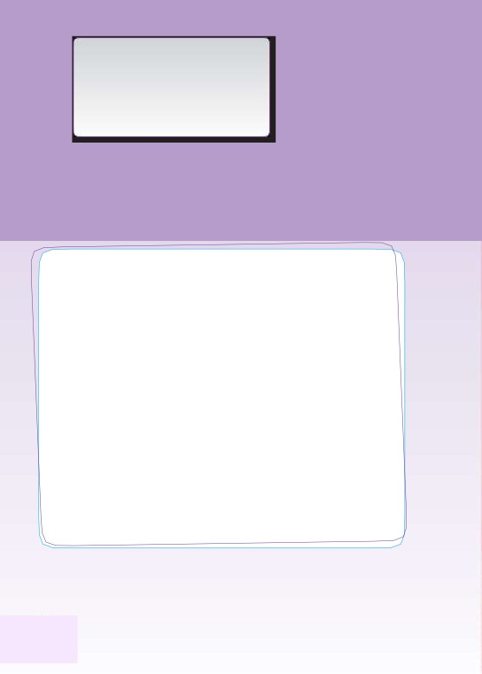
L’ACÉTONE
Qu’est-ce que l’acétone ou les corps cétoniques ?
Les corps cétoniques sont des acides et sont produits par l’organisme lors
de la dégradation des graisses. Dans lescirconstances normales,ils sont
14
produits lorsqu’on est à jeun (on utilise des réserves de graisse) et il sont
éliminés par les reins dans lesurines.
Encasdediabète,lorsqu’onfaitfaceàunediminutiondutauxd’insuline,
lesucres’accumuledanslesangplutôtquedepénétrerdanslescellulesqui
enontbesoin.Celles-civontdoncavoirrecoursàladégradationdesgraisses
commesourcealternatived’énergieetproduireparconséquentunequantité
importante de corps cétoniques.
Dans ce cas, il se produit une acidocétose : les corps cétoniques acidifient
le sang et provoquent des troubles pouvant évoluer vers le coma.
C’est une urgence !
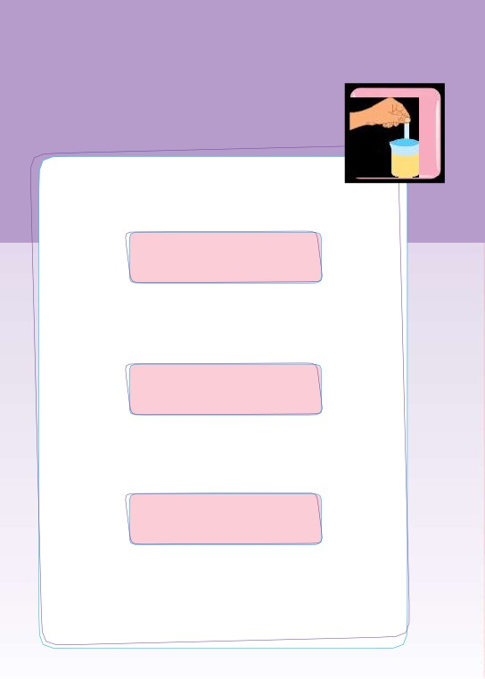
Analyse d’urine : je reste vigilant!
Si l’analyse est la suivante
NORMALE ACÉTONE = 0{
=
votre diabète est équilibré.
15
Si l’analyse est celle-ci
GLYCÉMI
SUCRE = 0
{
E
ACÉTONE = +
NORMALE
=
c’est une cétose de jeûne ou vous avez fait une hypoglycémie.
Par contre, si l’analyse est celle-ci
GLYCÉMIE
SUCRE = +++
{
> 3g/l
ACÉTONE = ++ ou+++
=
Contactez votre médecin
afin notamment de rechercher les causes possibles:
•dose d’insuline insuffisante,
•oubli d’insuline,
•ou maladie intercurrente (grippe, etc...).
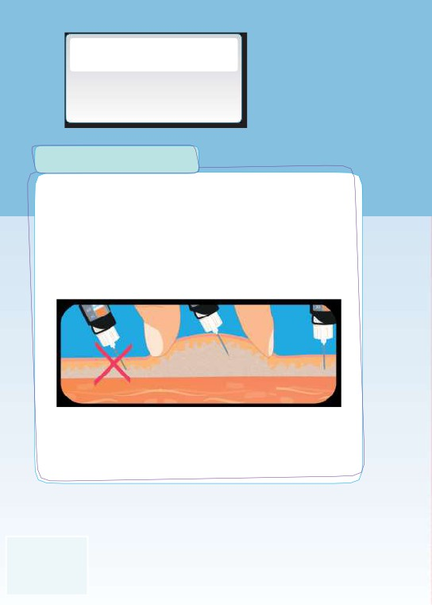
L’INJECTION
D’INSULINE
Avec un stylo rechargeable
Une injection bien faite
L’injection doit être faite sous la peau (en sous-cutané)
avec ou sans pli cutané (techniques recommandées
sur avis médical).
20
Ne pas piquer de
Piqûre debiais
Injection à la
biais sans pli cutané
à la base du pli
verticale sans pli
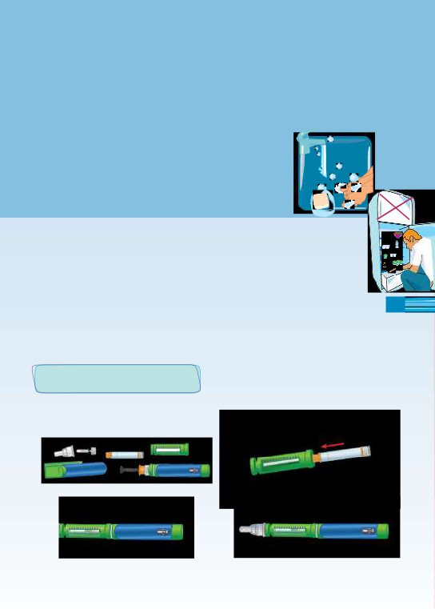
Préparation du matériel d’injection
• Lavez-vousles mainsà l’eauchaude et au
savon. Ne pas utiliser d’alcool.
•Préparez le matériel.
L’insuline doit être utilisée à température ambiante
(sortirduréfrigérateurl’insulineneuveaumoins1heureavantl’injection).
L’insulineentaméepourraêtreconservéeătempératureambiante,iln’est
donc pas nécessaire de la garderau réfrigérateur.
•Préparez votre stylo injecteur.
• Mettez en place l’aiguille.
Pourunmêmepatient,letissuadipeuxsous-cutanépeutatteindre
21
une épaisseur différente. Il existe différentestaillesd’aiguilles.
Avec un stylo rechargeable
Rassembler lesdifférents
ent
éléments du stylo.
Assembler le porte cartouche avec
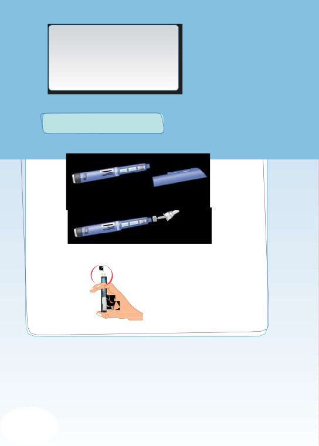
L’INJECTION
D’INSULINE
Avec un stylo prérempli
Enlever le capuchon dustylo.
Visser l’aiguille sur le styloprérempli.
22
Vérifierlaquantitéd’insulineetréaliserlapurge.
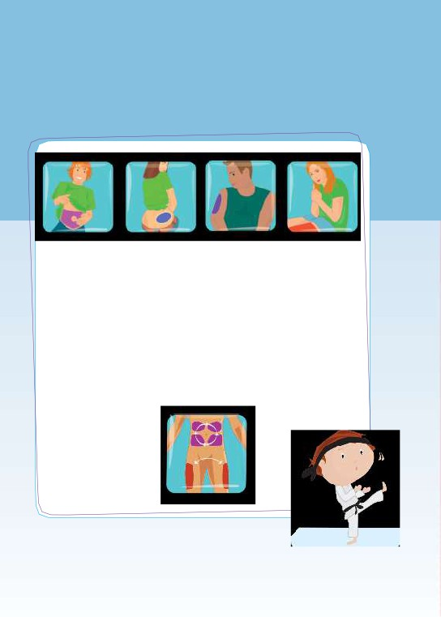
Sélection de la zone d’injection
Pour éviter la formation d’épaississement de la peau
(lipodystrophie) qui perturbe l’action de l’insuline, il est
conseillé de ne pas toujours se piquer au même endroit.
23
Il faut choisir le site d’injection en fonction de l’insuline choisie.
Il peut être bon de garderla même zone à la même heure.
Lorsqu’une activitéphysiqueou sportiveestprogrammée,évitez
de piquerla zone en regarddu musclesollicité.
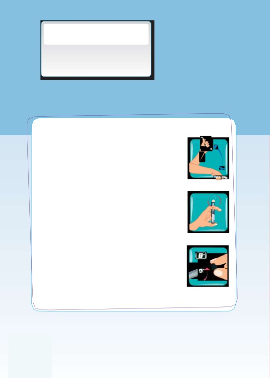
L’INJECTION
D’INSULINE
L’injection
• Remettez en suspension les insulines qui
le nécéssitent (cf. notice devotre insuline)
en agitant le stylo 10fois.
24
•Faites une purge pour éviter les bulles d’air.
•Sélectionnez la dose nécessaire à votreinjection
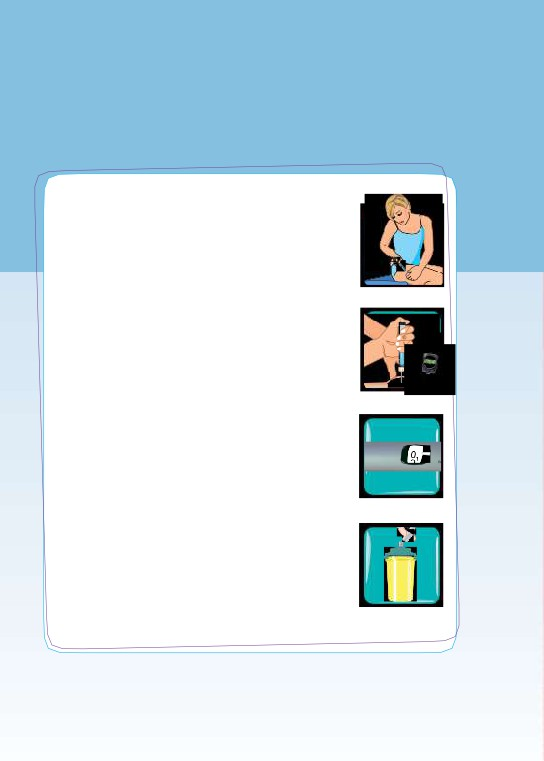
•Injectez en appuyant à fond sur le bouton
poussoir.
•Avec ou sans pli,comptez jusqu’ă 10 secondes
à la fin de l’injection avant de retirer l’aiguille
(selon la technique recommandée par votre
médecin).
5
•Vérifiez que toute la dosea été injectée.
•Dévissez et retirez l’aiguille etinsérez-la
dans un collecteur adapté.